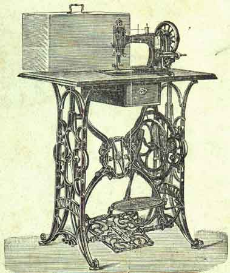
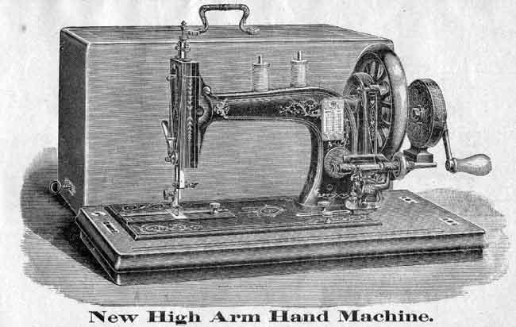
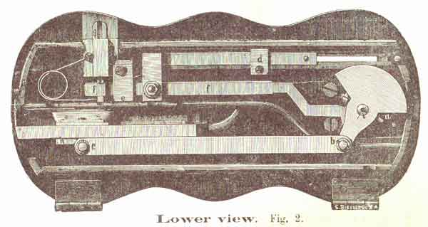

If the machine has come to you packed in a case unmounted, proceed as follows: -- Take the cross-brace and pass the 2 thinnest bolts through the holes beneath, in order to place the treadle bet- ween these bolts. If the treadle works easily fasten the bolts with the two square screws. Take the 2 legs -- gilt sides outwards -- and fix them to the cross-bar on the right and left side by means of 4 conical bolts, passing them through the 2 hind upper holes and the 2 under holes of the legs in front and through the 4 holes of tbe cross-brace; then fasten the 4 bolts by means of the nuts.
In order to put the wheel in its position, fix the crank in the hub of the wheel by means of a square screw. loosen the bolt, in the middle of the cross-brace and put the pointed axle of the whee1 into the middle of the right leg. Fee that the wheel moves easily and fasten the said bolt by means of the square screw. See that the wooden rod is plumb. Put the table loose on the stand and fasten the head of the machine to the table by its hinges. Adjust the table nicely, so that the belt will run clear. through the holes, and try it. Then screw the table from below to the. stand. Oil carefully, drive very fast aud see that everything runs easily.

. If the Machine has come to you packed in a case, stand unmounted, proceed as fellows: -- Take the treadle-rod and pass one and through the hole in the right leg and the other end through the left of the stand. Keep the gilt sides of the legs outwards. Screw the nuts on loosely. Put the cross brace in position as shown in the engraving, leaving the right side loose, so that you may fit the wheel in its place. To do this, you must first insert the pointed screw through the right leg, firmly fixing it with the nut outside. Then screw all the bolts tight. Screw the wooden pitman to the wheel and to the treadle, but not so tight as to make it run heavily. Fix the treadle with the conical nuts so that while it works easily it cannot shake about. See that the wooden rod is plumb. Put the table loose on the stand and fasten the head of the machine to the table by its hinges. Adjust the table nicely so that the belt will run clear through the holes, and try it. Then screw the table from below to the stand. Oil carefully, drive very fast and see that everything runs easily.
EVERY "Naumann" Machine, before leaving the Factory, is carefully tested. It will stitch with No. 300 cotton, or with coarse 9-cord thread, and is competent to perform all the kinds of work set forth in our circulars. As an evidence of this it is send out threaded, and with a piece of work under the needle.
Examine the threading of machine and shuttle carefully, which is clearly shown in our illustrations.
THE upper fly-wheel of every machine is disconnected before it leaves our Depot, so that no harm can happen to it in transit. Turn the steel connector "b" on the outside of the upper wheel inwards.
To put it out of gear turn the connector outwards.
TILT the machine from you, when the rollers will drop to the floor for use. Raise the light end of the machine and run it where you like. When about to sew, the machine will rest firm, which will be a great advantage to you.
THIS most important duty ought to be closely attended to. Neglect will bring trouble and dissatisfaction and we will not be held responsible for the consequences. You should only use best quality Sewing-machine Oil, which is always obtainable at our agencies. Never (except for cleaning as explained on next page and then only moderately and for a few minutes) use kerosene, petroleum or paraffin, which corrode the works. Salad-oil, olive, castor or any other coarse oil, are certain to clog the machine, cause it to run heavily and in the end stops it altogether.
Look into the openings on the outside of' the upper wheel. You will see a red line, indicating in oil-hole. Into this and into all others holes painted red pour a few drops of oil. On the top of the arm are two oil-holes No. 4 to the right and No. R to the left- Push the silvered plate No. 5 in front arm near the fly wheel to the left; you will then see the cog-wheels, which oil, and also the shaft which bears them. Put oil upon all parts of the machine subject to constant friction for instance the needle-bar 45, the presser bar 8, through the hole in the face plate.
Should the machine be supplied with a hand appliance put some drops of oil in the 2 holes in the frame and also in the crank.
Now throw off the belt, turn up the head of the machine (refer to fig. 2 on the inside back cover) and oil all moving parts carefully, turning the wheel slowly that you may see them. Do not forget to look behind the revolving eccentric on the right a. Oil this. Also both ends of the long rod b and c, the slide of the shuttle carrier h and the part that moves the feeder g.
Oil all the bearings of the stand carefully and when taking off the belt of the wheel, see that it runs easily.
The machine will need cleaning from time to time, especially if only occasionally used. To do this pour kerosene or petroleum upon all the moving parts and drive very fast for a minute only. Then thoroughly wipe off the dirty kerosene or petroleum. Then oil throughout as above directed.

It is a simple plan and. a good one to keep a soft rag for the purpose of cleaning the wearing parts every Ray (if used constantly) before commencing work. Then oil the machine as directed, using only a few drops in each place. This will only take but a few moments which are well repaid.
If the machine runs stiffly he sure it is your own fault. It is either dirty, or you have not oiled some part.
IF the operator is unused to sewing machines she should first become familiar with the treadle motion. Place the feet in an easy position on the treadle, so that the hollow of the foot may rest directly over the treadle rod. Start the wheel with the right hand by turning it towards you, then by giving the ankle an easy, rocking motion, regularity and evenness will be obtainable to the operator's best advantage.
IN the event of any breakage or disarrangement by accident, which seldom happens, please send the machine to one of our nearest agencies where the matter will be put right and with fair usage the machine will last your lifetime.
Do not allow any person to interfere with the mechanism in any way. Do not alter the main screws or the adjustment. Do not allow any clever friend to file, or mark or to tinker any part of the machine. We have often heard a customer saying:,I took my machine all to pieces and put it together again." Nothing is so bad. Let well alone.
LOOSEN the screw 28 on the needle-clamp, first moving the needle- bar to, its highest point. Put the butt end of the needle in the clamp, keeping the side with the long groove towards you. Lower the needle-bar until the gauge-mark (a graven line) on the upper part of the bar is exactly level with the top of the machine. Then see that the eye of the needle comes exactly level with the needle-plate. Screw the needle-clamp tight. It will however be found that the needles supplied with the family machine are self setting and. invariably require to be simply pushed as high as they will go when they will be found in the right position without reference to the graven line aforesaid. See that the needle moves precisely in the centre of the hole in the needle-plate, If the needle be slightly bent, spring it with the finger until it be quite straight. If you neglect to set the needle properly you will break the thread or miss stitches.
WITH the "Naumann" Machines you do not require so coarse a thread as in hand-sewing, every stitch being double, and, moreover, locked. Be careful and see that you have the needle adjusted to a given size for the thread to pass through viz.
For 200 to 150 Cotton use No. 9 (or 00) Needle
For 150 to 100 Cotton use No.10 (or 0) Needle
For 100 to 80 Cotton use No.11 (or 1) Needle
For 80 to 60 Cotton use No.12 (or 2) Needle
For 60 to 40 Cotton use No.18 (or 8) Needle
For 40 to 80 Cotton use No.14 (or 4) Needle
For 80 to 20 Cotton use No.15 (or 5) Needle